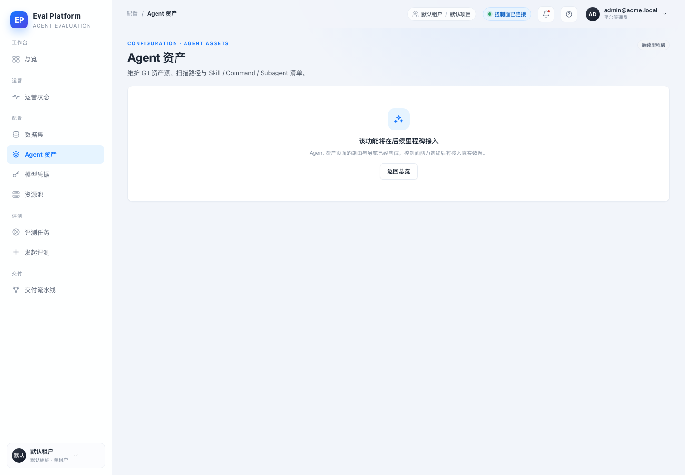
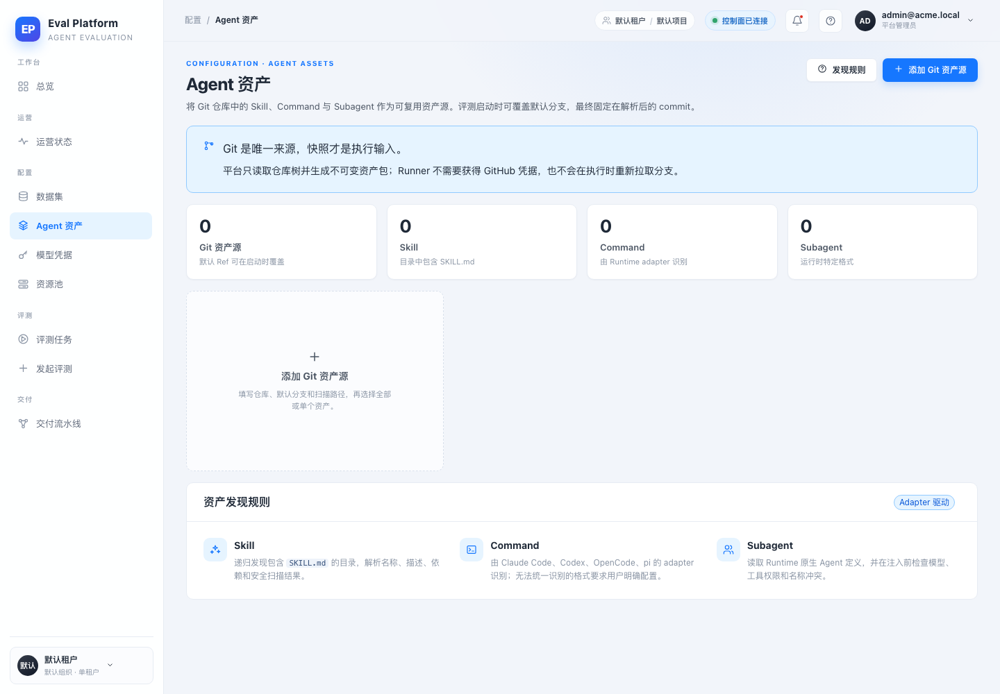
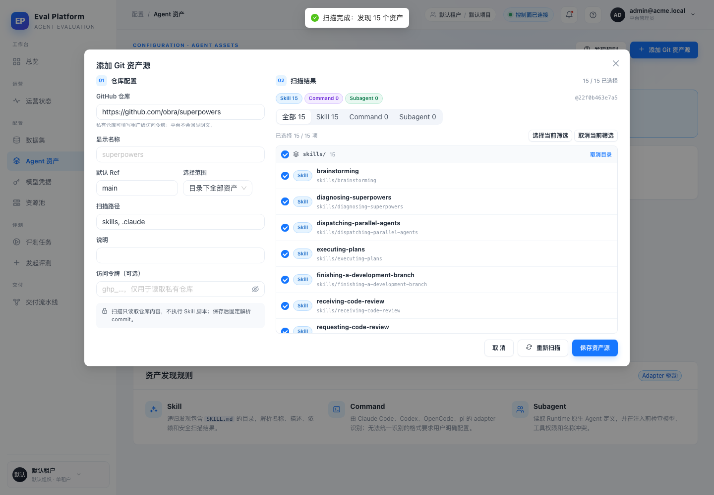
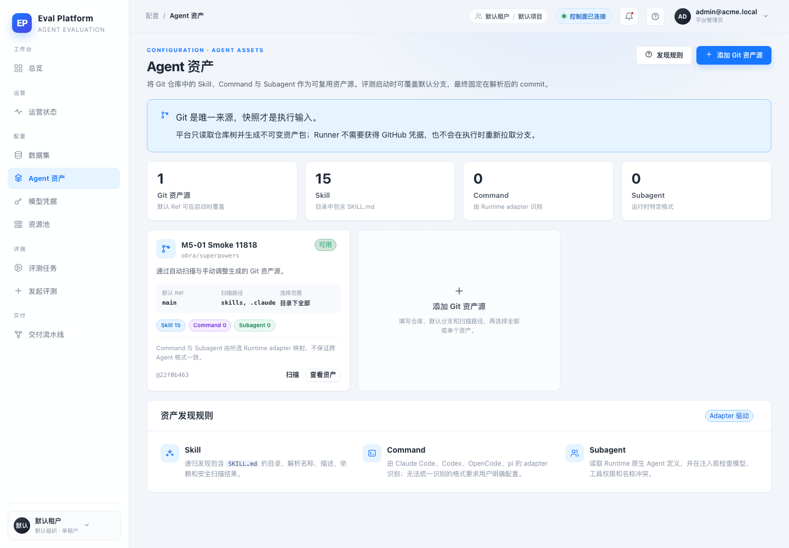
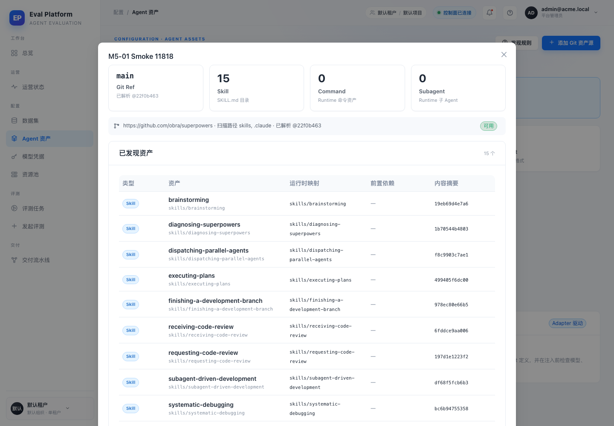
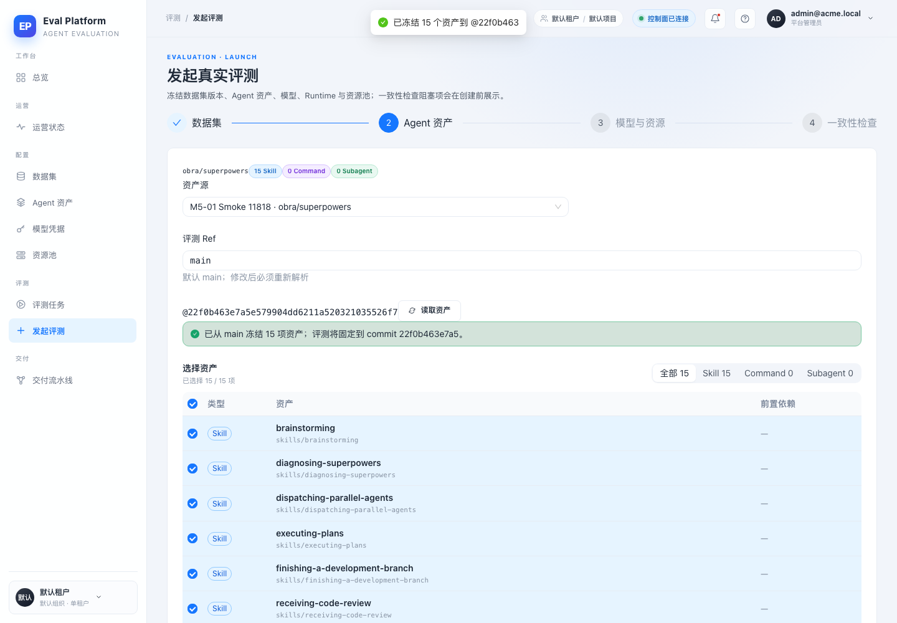
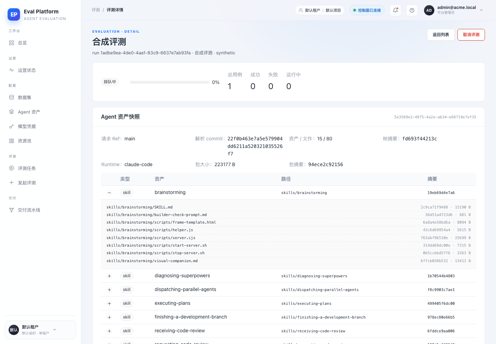

- 分支
- agent/complete-m5-01-e3786459ff50
- 控制面
- FastAPI @ 127.0.0.1:8100 · SQLite
- 控制台
- Vite @ 127.0.0.1:5273
- 真实 Git 来源
- github.com/obra/superpowers @ 22f0b463e7a5e579904dd6211a520321035526f7
- 快照
- 5e3589e2-4975-4a2e-ab34-e68719e7ef35
- 引用快照的评测
- 1adbe9ea-4de0-4aa1-83c9-6637e7ab93fa
AI Eval Platform · M5-01
M5-01 Agent 资产源、不可变快照与 Runtime 注入 · 冒烟报告
在真实运行的控制面上完成 Agent 资产源新增、Git 扫描、不可变快照冻结、发起评测引用快照，并用同一份 80 文件资产包验证 Runner 的隔离注入路径。两个界面问题在冒烟中发现并修复。
10冒烟场景
15Skill 资产
80快照文件
223 KB资产包大小
Environment and Artifact
2026-11-10 · macOS · Chromium headless 1440×1000Scenario Matrix
8 pass · 2 fixed| # | 场景 | 结果 | 说明 | 证据 |
|---|---|---|---|---|
| 01 | 基线：/assets 占位页 | BASELINE | 改动前页面只有“该功能将在后续里程碑接入”的占位卡片。 | m5-01-before-assets-placeholder.png |
| 02 | Agent 资产控制台 | PASS | 资产源指标、Git 来源提示、资产源卡片与发现规则按原型渲染。 | m5-01-after-assets-empty.png m5-01-after-assets-list.png |
| 03 | 新增 Git 资产源并扫描真实仓库 | PASS | 填写 obra/superpowers、main、skills/.claude 后扫描出 15 个 Skill；类型筛选与逐个选择可用。 | m5-01-after-assets-scan.png |
| 04 | 冻结不可变快照 | PASS | 保存时解析到 commit 22f0b463，15 个资产 / 80 个文件 / 223177 B，写入 OSS 风格对象并展示摘要。 | m5-01-after-assets-detail.png |
| 05 | 重复解析的幂等性 | PASS | 同一 commit + 选择再次 resolve 返回 200 和原快照 id，未新增第二个快照。 | — |
| 06 | 发起评测：资产步骤 | PASS | 向导展示资产源、评测 Ref、已选资产与解析结果；未解析时不能进入下一步，解析后固定 commit 与数量。 | m5-01-after-wizard-assets.png |
| 07 | 评测冻结快照 | PASS | 通过运行中的控制面创建评测并回读：asset_snapshot_id、resolved_commit、15 个资产全部保留在评测详情。 | m5-01-after-eval-detail.png |
| 08 | Runner 物化真实资产包 | PASS | 下载同一份 223177 B 资产包，校验 bundle/tree digest 后在隔离工作区写出 80 个文件，brainstorming/SKILL.md 存在，旧 .claude 被清除。 | — |
| 09 | 界面问题：选择态复选框 | FIXED | 行 key 与选择 key 不一致导致 15/15 已选但复选框为空；改为 path key 后选择态一致。 | m5-01-defect-wizard-checkbox-before.png m5-01-after-wizard-assets.png |
| 10 | 界面问题：详情状态标签 | FIXED | 详情横幅的 flex 规则命中了状态 Tag，导致“可用”被拉满整行；限定文本容器后恢复为紧凑标签。 | m5-01-defect-detail-tag-before.png m5-01-after-assets-detail.png |
Issues and Observations
P2 发起评测向导的资产复选框与选择状态不一致P3 资产详情横幅中的状态标签被拉伸
发起评测向导的资产复选框与选择状态不一致
- 实际
- 显示“已选择 15 / 15 项”，但每一行复选框都是空的。
- 期望
- 选中行与复选框状态一致，点击行/复选框都能反映到快照解析。
- 根因
- Table rowKey 使用 type:path，rowSelection 的 selectedRowKeys 使用 path。
Fixed · working tree
资产详情横幅中的状态标签被拉伸
- 实际
- “可用”标签横向占满横幅剩余宽度。
- 期望
- 标签保持内容宽度，只有仓库/扫描信息占剩余空间。
- 根因
- .asset-detail-banner > span 的 flex:1 同时命中了 Tag。
Fixed · working tree
Evidence
7 screenshots






Automated Coverage Assessment
4 areas reviewed| 范围 | 覆盖 | 结论 | 建议 |
|---|---|---|---|
Conclusion
可交付，带环境限制说明核心用户路径、快照冻结、评测引用和 Runner 物化均通过；两个界面问题已修复并有前后证据。
- 本机无 Docker daemon，Runner 的容器内执行与阿里云 OSS 未在本轮直连验证。
- 真实 GitHub 扫描、对象存储 HTTP 签名路径与浏览器流程均已实测。
由 dsh-superagent（ZTGolem）生成 · 证据来自 headless Chromium CDP 截图与真实控制面 API 调用